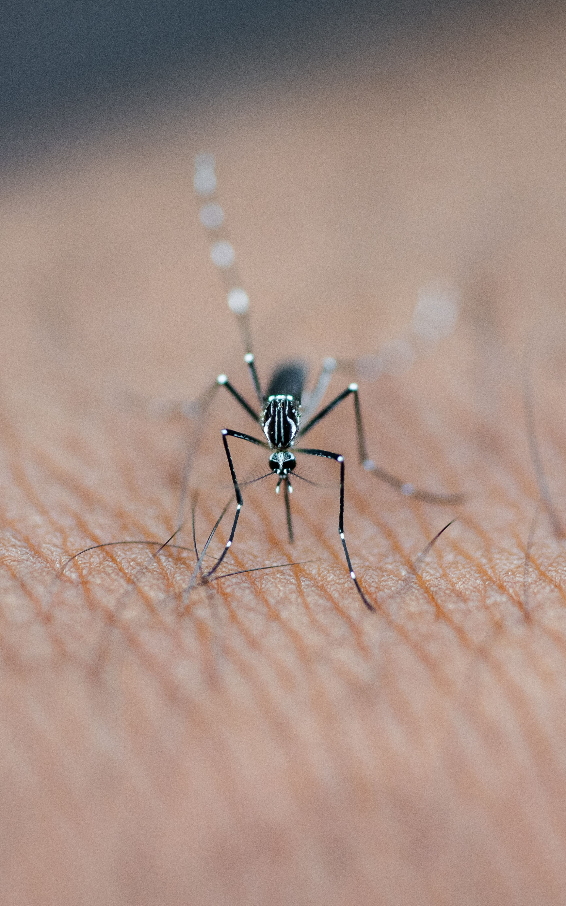
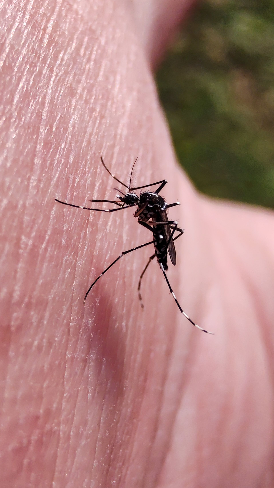
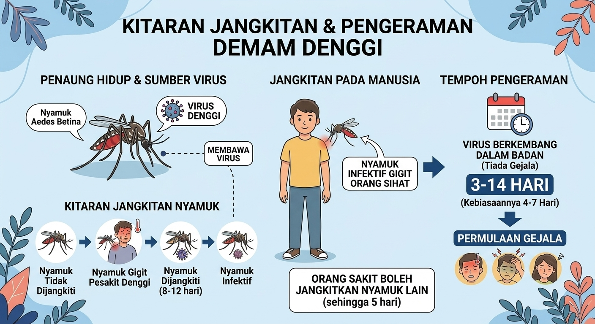

Apa itu Demam Denggi?
Demam denggi ialah sejenis penyakit jangkitan virus bawaan vektor yang menjadi salah satu ancaman kesihatan awam paling utama di kawasan beriklim tropika dan subtropika. Penyakit ini disebabkan oleh virus Denggi daripada keluarga Flaviviridae. Virus ini mempunyai empat serotip yang berbeza iaitu DEN-1, DEN-2, DEN-3, dan DEN-4. Jangkitan oleh satu serotip memberikan imuniti seumur hidup terhadap serotip tersebut sahaja, bermakna seseorang boleh dijangkiti Demam Denggi sehingga empat kali seumur hidup.
Rekod perubatan terawal yang menyerupai Demam Denggi ditemui dalam ensiklopedia perubatan China daripada Dinasti Jin (tahun 265 – 420 Masihi), yang menggelarnya sebagai "racun air". Istilah "Dengue" pula mula dikesan pada tahun 1779 semasa wabak besar berlaku serentak di Asia, Afrika, dan Amerika Utara.
Penyakit ini bukanlah sesuatu yang baharu di negara kita. Kes Demam Denggi yang pertama di Malaysia telah dikesan secara rasmi pada tahun 1901 di Pulau Pinang. Manakala, wabak pertama bagi varian yang lebih berbahaya iaitu Demam Denggi Berdarah (Dengue Haemorrhagic Fever) mula dilaporkan pada tahun 1962 di George Town, Pulau Pinang. Sejak itu, Demam Denggi telah diisytiharkan sebagai penyakit endemik di Malaysia.
Vektor utama Demam Denggi
Virus Denggi tidak boleh berpindah secara langsung dari manusia ke manusia tanpa perantara. Ia memerlukan agen penyebar yang dikenali sebagai vektor. Vektor utama bagi Demam Denggi ialah:
- Aedes Aegypti: Vektor primer (utama) yang paling cekap menyebarkan virus ini. Nyamuk ini hidup sangat dekat dengan penempatan manusia (domestik) dan lebih gemar membiak di dalam bekas takungan air buatan manusia di dalam rumah.
- Aedes Albopictus: Vektor sekunder yang biasanya ditemui di luar rumah, kawasan luar bandar, atau kawasan yang mempunyai banyak tumbuhan (peridomestik).


Morfologi nyamuk Aedes
Nyamuk Aedes mempunyai ciri-ciri fizikal yang sangat unik dan mudah dikenali dengan mata kasar bagi membezakannya dengan nyamuk biasa (seperti nyamuk Culex atau Anopheles):
- Warna badan: Mempunyai corak belang hitam dan putih yang ketara pada bahagian badan dan kaki (sering digelar "nyamuk harimau").
- Corak Teks (Skutum): Pada bahagian belakang dada (scutum), spesies Aedes aegypti mempunyai corak putih berbentuk kecapi (lyre-shaped), manakala Aedes albopictus mempunyai satu garisan putih tebal yang lurus di bahagian tengah.
- Saiz: Bersaiz sederhana, biasanya sekitar 4 hingga 7 milimeter.
- Tabiat Menggigit: : Nyamuk Aedes betina sahaja yang menggigit manusia kerana memerlukan protein daripada darah untuk perkembangan telurnya. Waktu puncak mereka aktif mencari makan adalah pada awal pagi (6:00 pagi – 8:00 pagi) dan lewat petang (5:00 petang – 7:00 malam).
Cara Jangkitan & Tempoh Pengeraman
-
Bagaimana Ia Berjangkit?
Proses rantaian jangkitan bermula apabila nyamuk Aedes betina yang sihat menggigit pesakit yang sedang mengandungi virus denggi di dalam darahnya (fasa viremia). Virus tersebut akan mengeram di dalam badan nyamuk selama 8 hingga 12 hari sehingga menyusup ke kelenjar liurnya. Apabila nyamuk yang telah dijangkiti ini menggigit orang sihat yang lain, virus Denggi akan dipindahkan bersama air liur nyamuk tersebut ke dalam salur darah manusia tersebut. -
Tempoh Pengeraman (Incubation Period)
Selepas digigit oleh nyamuk yang membawa virus, simptom atau gejala tidak akan muncul serta-merta. Tempoh pengeraman di dalam badan manusia biasanya mengambil masa 4 hingga 7 hari, tetapi boleh merangkumi julat antara 3 hingga 14 hari sebelum tanda-tanda klinikal (seperti demam panas mengejut, sakit sendi, dan ruam) mula kelihatan.

Tanda dan Gejala Demam Denggi
Apabila seseorang dijangkiti virus Denggi, gejala biasanya akan mula kelihatan selepas tempoh pengeraman selesai (sekitar 4 hingga 7 hari selepas digigit).
- Demam Tinggi Mengejut: Suhu badan boleh melonjak tinggi sehingga 40°C secara tiba-tiba.
- Sakit Kepala yang Teruk: Terutamanya di bahagian belakang mata (retro-orbital pain).
- Sakit Sendi dan Otot: Kesakitan yang amat sangat pada sendi, tulang, dan otot (sehingga Demam Denggi digelar sebagai "breakbone fever").
- Ruam Kulit: : Ruam merah yang khas (measles-like rash) boleh muncul di bahagian badan, lengan, dan kaki.
- Gejala Sampingan: : Rasa mual, muntah-muntah, hilang selera makan, dan rasa terlalu letih.
Cara Pencegahan Demam Denggi
Memandangkan ubat khusus untuk mematikan virus ini masih belum wujud, kaedah pencegahan adalah benteng pertahanan terbaik. Pencegahan memfokuskan kepada pemutusan rantaian pembiakan nyamuk:
- Pemusnahan Tempat Pembiakan: Amalkan konsep "Cari dan Musnah" setiap minggu. Luangkan masa 10 minit untuk memeriksa dan mengosongkan bekas menakung air jernih seperti pasu bunga, alas tiang peti sejuk, baldi, dan tayar buruk.
- Penggunaan Abate: Masukkan ubat pembunuh jentik-jentik (seperti rumusan temephos/Abate) ke dalam bekas takungan air yang tidak dapat dikosongkan.
- Perlindungan Diri: Gunakan semburan penghalau nyamuk (repellent) yang mengandungi DEET pada kulit yang terdedah, terutamanya semasa waktu puncak nyamuk aktif. Pasang jaring nyamuk (mosquito screen) pada tingkap rumah.
- Semburan Kabus (Fogging): Benarkan anggota kesihatan melakukan semburan kabus di kawasan perumahan jika terdapat kes dikesan untuk membunuh nyamuk Aedes dewasa yang membawa virus.
Cara Rawatan Demam Denggi
Sehingga kini, tiada ubat antiviral khusus atau antibiotik yang boleh menyembuhkan Demam Denggi. Rawatan yang diberikan adalah bersifat sokongan (supportive treatment) untuk melegakan gejala dan mencegah komplikasi buruk.
- Kawal Demam: Ambil ubat Paracetamol mengikut dos yang betul untuk menurunkan suhu badan dan mengurangkan sakit sendi.
- Amaran Keras: Elakkan mengambil ubat penahan sakit daripada kumpulan NSAID seperti Aspirin, Ibuprofen, atau Mefenamic Acid (Ponstan). Ubat-ubat ini boleh menjejaskan fungsi pembekuan darah dan meningkatkan risiko pendarahan dalaman yang membawa maut.
- Hidrasi Optimum: Pesakit diwajibkan minum air dengan kuantiti yang banyak (air masak, jus buah-buahan, atau larutan hidrasi oral) untuk mengelakkan dehidrasi akibat kebocoran plasma darah.
- Pemantauan Rapi: : Lakukan ujian darah (seperti fasa platelet dan hematokrit) secara berkala di klinik atau hospital. Sekiranya pesakit menunjukkan tanda amaran bahaya seperti muntah berterusan, sakit perut yang teruk, atau pendarahan gusi/hidung, mereka perlu dimasukkan ke dalam wad hospital dengan segera.
Demam Denggi Berdarah
Demam Denggi Berdarah (DDB) atau dalam bahasa Inggeris dipanggil Dengue Haemorrhagic Fever (DHF) merupakan komplikasi serius daripada jangkitan virus Denggi biasa.